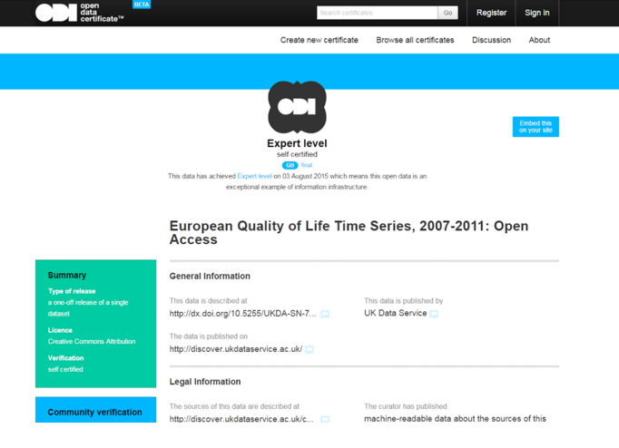

Experience of Open Data Institute (ODI) data certification
Louise Corti, from the UK Data Service, reflects upon the value they gained in the process of attaining ODI Open Data Certificates
In summer 2015 the UK Data Service and AppChallenge collaborated to launch a developer contest using open data about the Quality of Life of European citizens. The project involved us creating a truly open dataset certified by the ODI to be made available via a new test open API.
The UK Data Service uses the UK Data Archive based at the University of Essex to manage its data curation services. As a national trusted digital repository, the archive conforms to best practice benchmarks for digital preservation via certification under the ISO standard for information security (27001) and the Data Seal of Approval (DSA). While these certifications require transparency and documentation about procedures and practices for managing, curating and publishing data, the questions posed for ODI open data certification place greater emphasis on the presence of detailed machine-actionable information.
In this piece I reflect on our ODI certification experience and how it has helped us to enhance our data documentation practices to standards responsive to the open data community. Working closely with the ODI we were delighted to attain platinum certification for two of our open datasets.
The open data
We wanted to certify the open social survey in our collection, the European Quality of Life Survey (EQLS) data, carried out by Eurofound. For this open data, data were fully anonymised, harmonised across years and labelled, with weights made available in the data file so that results would match published findings. These aspects of data quality are critical for us for publishing high-quality open data. These data were made available via our web download service and a public API.
We took another of our high-quality open datasets through the certification process as a trial run, an oral-history collection based on 450 interviews with individuals born around 1900, known as The Edwardians.
The ODI certification process
A key focus of the 90 or so questions posed in the ODI’s certification process is on the availability of explicit human- and machine-readable information about the data, offering transparency about the content, veracity and availability of the data. These questions are answered by providing verifiable documentation as URIs.
The ODI gave us excellent detailed feedback from our first attempt at completing a certificate and, following a series of iterations over a busy nine-month period, we enhanced and finalised our two certificates.

Issues raised and changes made
What stood out for us was that, to reach the highest levels of certification, the ODI Open Data Certificate needed really detailed stand-alone machine-readable information. While we already utilise rich standards-compliant metadata – Data Documentation Initiative (DDI) – to describe the creation, availability of and rights associated with our datasets, our existing metadata fell a little short of expectations for supporting machine harvesting. Thus, we added the following additional information to our web content, metadata records and user documentation.
Licenses and rights statements. Following ODI guidance we added a link to the appropriate Creative Commons licence and database rights statement for every file available as well for as the whole collection.
Privacy assessment statement. After our own in-house checks, the final decision about disclosure risk in social science data that we publish is made by data owners, following their own in-house practices, e.g. the Office for National Statistics (ONS) microdata release guidance. Transparency about such decision-making on disclosure risk is often lacking, so we enhanced our own Privacy Impact Assessment statement to signpost higher-level protocols followed by social survey data producers.
File manifest for downloadable data. We used existing elements of the DDI metadata schema, fileDesc, to add file-level information and populate file manifests for all our download bundles. Title, description, URL, format, release and modification dates, licence and copyright information were added in the dataset’s machine-readable record.
IDs as URIs. Records or rows in our open survey dataset are responses to questions for an anonymised respondent. From a social science point of view, it proved hard for us to appreciate why a single row of values, with no meaningful identity, would benefit from a URI. The ODI argued, persuasively, that a URI for each record could provide additional utility including:
the ability to make a simple request to find the attributes associated with the record;
reference to the record in some analysis, or to annotate it with additional data;
identifying clusters of characteristics across rows.
A new variable, a unique URI for each unique row of data, was added, pointing to a simple API call that reveals all values for a unique row.
Trusted third-party URIs in data. Platinum certification requires that the data contain URI links to third-party information, which is preferably ‘trustworthy’. Investment, cooperation and trust in third-party registries of information are perennial discussion points for the archive, who have a remit to preserve data for the longer term. While relying entirely on third-party resources that may not persist may put this goal at risk, we appreciate that such information is useful for the end user. We added third-party identifiers for geographies – as European ISO country codes for the survey dataset and Google map locations for UK towns for the oral-history dataset.
Fixity information. MD5 checksums for data downloads were made visible for all available zip bundles, downloadable in various formats.
Service availability and performance. We made public our previously internal service status update, providing greater transparency about the reliability and status of our web services.
Summary
All in all, the ODI certification process was incredibly useful. It created some mini Mexican waves as issues arising trickled through our organisation, but in response our teams graciously put in place more transparent information. I want to extend thanks to Ralph Cochrane for proposing our open data App Challenge and getting us hooked into the open data world, and to Leigh Dodds and Richard Norris at the ODI for guiding us through their certification process.
We would encourage all open data publishers to go through this process to help them better understand how users benefit from the ability to make clear judgements about the quality and trustworthiness of the data.
links